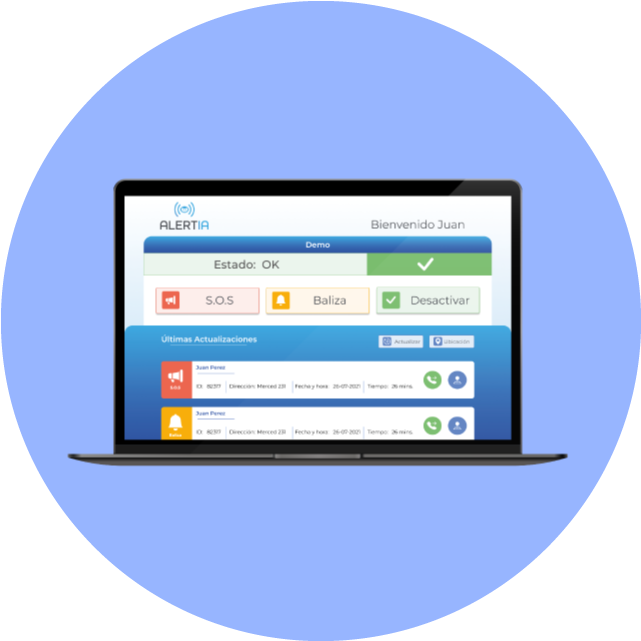
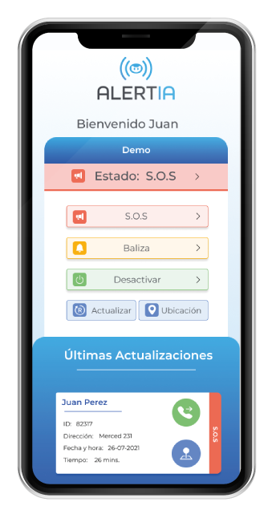

Es una plataforma de seguridad que te conecta rápidamente con tus
familiares, vecinos, compañeros de trabajo, municipalidad, policías y otros organismos de seguridad
ciudadana, en los momentos de mayor urgencia o de peligro inminente, de forma de poder enfrentar juntos
y
en coordinación, cualquier delito o emergencia que se pueda estar produciendo, alertando primero a los
que
están mas cerca para que puedan prestar cooperación de forma rápida y eficiente. Mediante el monitoreo
en
línea de las situaciones de peligro, permitiendo reaccionar de forma
oportuna y coordinada, logrando así evitar la ocurrencia de delitos o siniestros mayores, así como
también
permite un registro claro y ordenado de las situaciones que ocurren para planificar a futuro mejoras de
coordinación.
Botón de Pánico Virtual
El Botón de Pánico Virtual es una APP que puede usar en cualquier número de teléfonos móviles Android o
iOS, así también como en computadoras normales, tablet y cualquier dispositivo con acceso a internet. Este
botón permite poner a su grupo en situación de alerta o peligro, de forma inmediata se envía a todos los
involucrados (incluido policías del plan cuadrante) un SMS el detalle de quien presionó el botón, su
estado actual, un mapa, teléfono de contacto y acceso directo a WAZE para movilizarse al lugar de alarma.
Esto permite que todos los vecinos, porteros, conserjes y organismos de seguridad pertinentes tengan la
información necesaria para intervenir en segundos.
Peligro
Alerta al grupo de una situación de peligro grave, en este caso si hay una alarma integrada
encenderá tanto la baliza como la sirena emitiendo una luz y sonido disuasorios.
Alerta
Permite avisar al grupo de alguna situación sospechosa y permite que la gente tome actitud
alerta ante cualquier cambio. Si hay una alarma integrada encenderá la baliza pero no emitirá el sonido de
la sirena.
Ok
Este botón permite devolver a estado normal en caso de haber terminado la situación de peligro
y/o haber ocurrido una activación por error.

Gestion desde computador
Para el usuario administrador, la plataforma podrá ser visualizada a través de pantallas de ordenador,
entregando una vista más completa y detallada.

Activaciones mediante celular
Los usuarios de la aplicación, podrán realizar activaciones de las alarmas mediante su celular.
Alarma Integrada
El Botón de Pánico Virtual es una APP que puede usar en cualquier número de teléfonos móviles Android o
iOS, así también como en computadoras normales, tablet y cualquier dispositivo con acceso a internet. Este
botón permite poner a su grupo en situación de alerta o peligro, de forma inmediata se envía a todos los
involucrados (incluido policías del plan cuadrante) un SMS el detalle de quien presionó el botón, su
estado actual, un mapa, teléfono de contacto y acceso directo a WAZE para movilizarse al lugar de alarma.
Esto permite que todos los vecinos, porteros, conserjes y organismos de seguridad pertinentes tengan la
información necesaria para intervenir en segundos.
Vigilante Virtual
El Botón de Pánico Virtual es una APP que puede usar en cualquier número de teléfonos móviles Android o
iOS, así también como en computadoras normales, tablet y cualquier dispositivo con acceso a internet. Este
botón permite poner a su grupo en situación de alerta o peligro, de forma inmediata se envía a todos los
involucrados (incluido policías del plan cuadrante) un SMS el detalle de quien presionó el botón, su
estado actual, un mapa, teléfono de contacto y acceso directo a WAZE para movilizarse al lugar de alarma.
Esto permite que todos los vecinos, porteros, conserjes y organismos de seguridad pertinentes tengan la
información necesaria para intervenir en segundos.